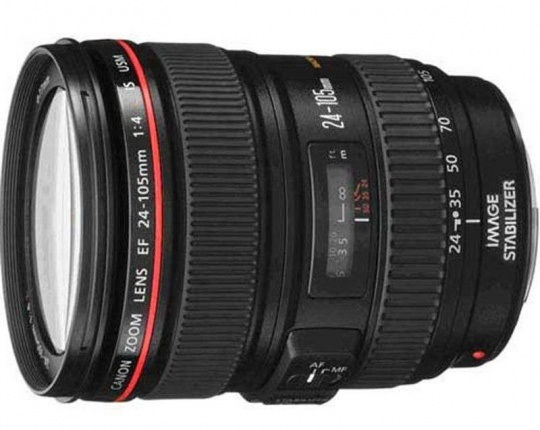

 覆盖从24mm广角到105mm中远摄焦段的L级标准变焦镜头。采用了恒定F4的最大光圈设计，使镜头口径得以缩小，同时较好地抑制了球面像差等的发生。不但覆盖了变焦比约4.4倍的宽广焦段，还实现了镜身整体的小型化。搭载佳能自行研发的特殊低色散玻璃超级UD（超级超低色散）镜片，较大程度抑制了整个变焦范围内色像差的发生，高分辨力和良好的对比度使高画质得以实现。而手抖动补偿效果最大相当于提高约3级快门速度的IS影像稳定器，使得在24-105mm的整个变焦范围内都能够轻松进行手持拍摄。画质当然也达到了L级镜头的高品质，广角区域的边缘画质和远摄区域的锐度均较好。虽然恒定最大光圈为F4，但仍可在使用远摄区域时获得大而美丽的虚化效果。变焦时与手动对焦时的手感良好，构图调整与对焦均可切实完成。用于APS-C画幅EOS数码相机时可覆盖约38-168mm的视角，可作为远摄变焦镜头使用。全画幅相机自不待言，也适合使用在APS-C画幅的相机上。
※本镜头虽然具有一定的防水滴性能，但是如果在雨天拍摄时，请尽量不要淋湿。
| 镜头焦距 | 24-105mm |
|---|---|
| APS-C画幅下的35mm规格换算焦距 *1 | 约38-168mm |
| 镜头结构 | 13组18片 |
| 光圈叶片 | 8片（圆形光圈） |
| 最小光圈 *2 | 22 |
| 最近对焦距离 | 约0.45米 |
| 最大放大倍率 *3 | 约0.23倍 |
| 驱动系统 | 环形 USM超声波马达 |
| 手抖动补偿效果 | 约3级 |
| 滤镜直径 | 77毫米 |
| 最大直径及长度 | 约Φ83.5×107毫米 |
| 重量 | 约670克 |